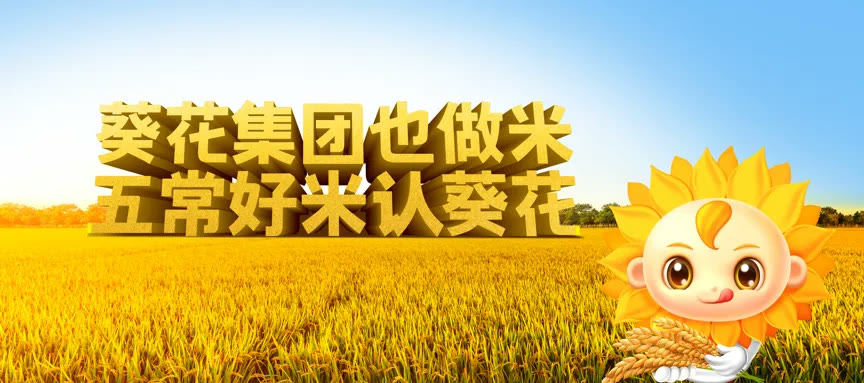
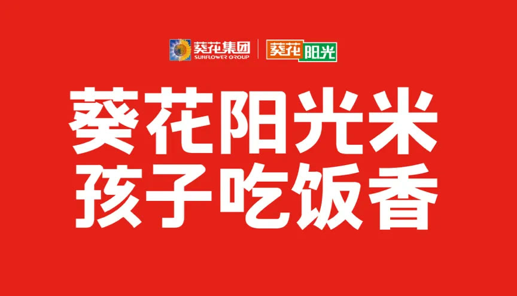
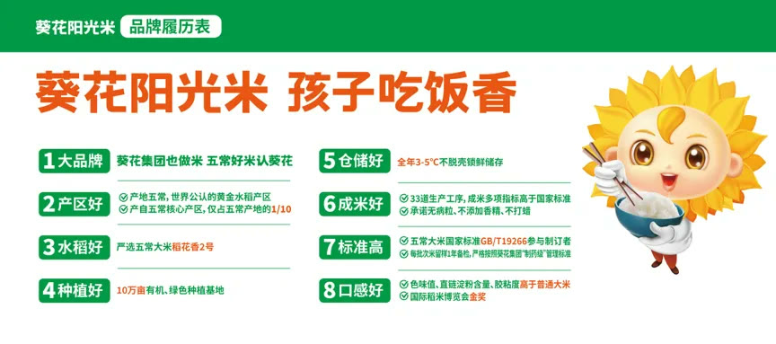
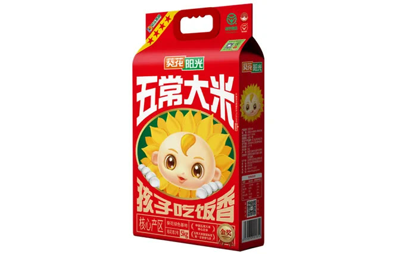
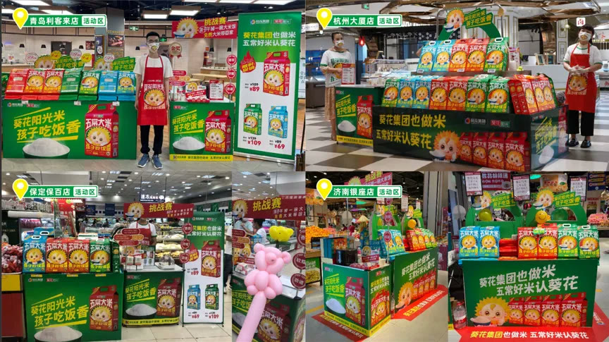
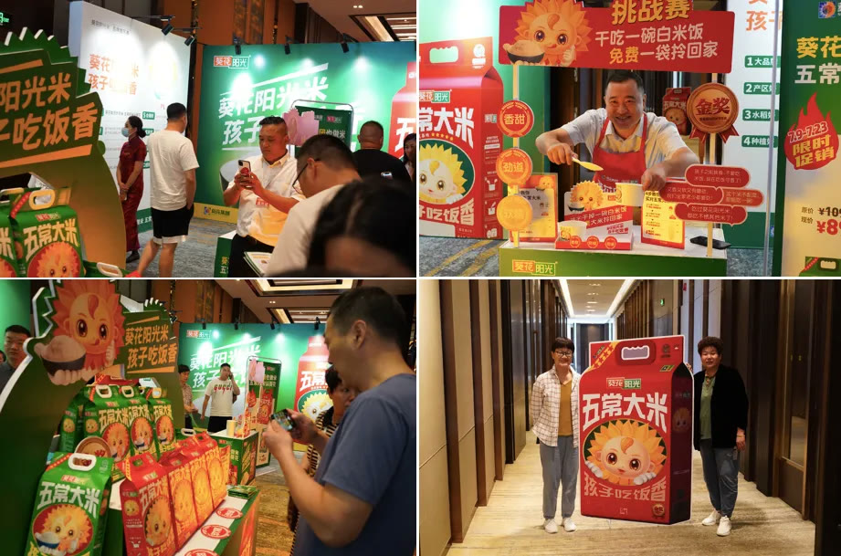

葵花集团本身是生自五常的企业，子公司葵花阳光已专注五常大米 16 年，为五常大米国家执行标准 GB / T 19266 的唯一企业参与者。然而很多消费者并不知道葵花集团做药也做米，不了解葵花阳光米有着葵花集团制药级的管理标准。所以我们就要通过全新品牌战略告诉消费者：葵花集团也做米，五常好米认葵花！大品牌担保，消费者放心选购！#华与华新作#葵花阳光全新品牌战略葵花阳光米业，是葵花集团旗下子公司，始建于 2006 年，主营五常大米、东北大米。虽然葵花阳光多年来一直都借力葵花集团的品牌流量，并没有发挥流量最大化。大多消费者都不知道葵花集团做药也做米，而且是五常好米！
▲葵花阳光米老包装
那么，我们要做的就是最大化放大葵花集团对葵花阳光的赋能，让所有人知道“葵花集团也做米，五常好米认葵花”！
让葵花阳光一夜之间，成为亿万消费者熟知的老品牌一切创意都要坚持将品牌资产继续一以贯之，积累、壮大；一切创意都是为了降低营销传播成本、顾客的选择成本。为了让葵花集团最大化赋能葵花阳光，而葵花集团的核心品牌资产之一就是：小葵花——中国亿万消费者的老朋友。我们要通过小葵花，让葵花阳光在一夜之间成为亿万消费者的老朋友。
#华与华新作#葵花阳光超级符号

葵花阳光超级符号：壮大小葵花，反哺葵花集团让葵花药业集团的小葵花直接成为葵花阳光米的代言人，可以实现一招降本。即降低葵花阳光的社会监督成本、顾客选择成本，及企业的营销传播成本。
1 ）让老百姓知道上市药企葵花大品牌也做米；2 ）在终端，买大米和买儿药是同一拨消费者。全国 40 万家药店有小葵花产品，全年药店不间断小葵花营销活动；3 ）小葵花累计广告投资 25 亿＋，可以直接赋能给葵花阳光，降低葵花阳光的营销传播成本。
#华与华新作#葵花阳光品牌谚语


在市场走访中我们发现，大多数家庭会为了给孩子选好米选择五常大米，并且挑食的孩子都爱吃的米，一定是好米！基于市场走访和葵花阳光米的资源禀赋，我们提出“葵花阳光米，孩子吃饭香” 品牌谚语，而孩子吃饭香≠ 儿童米/专给孩子吃的米，孩子吃饭香= 孩子吃饭香，米好是关键。
并且这句品牌口号，能让超级符号和品牌谚语互相加持，让记忆成本降到最低，实现了翻倍的传播效率。
#华与华新作#葵花阳光全新包装在华与华，我们把包装看作是一个元媒体。华与华设计的包装就是要让包装自己会卖货，打动购买。


我们为葵花阳光设计的超级元媒体——包装，它承载了全新的企业战略和品牌战略：让葵花集团和小葵花直接赋能葵花阳光，降低品牌成本。
这样的包装，消费者在大米货架前，一眼就能看出来，这是葵花集团出的大米，让葵花集团对葵花阳光的赋能最显化，最大化！
2022 年 7 月， 4 大城市 4 大商超首批次新装落地， 1 周后都实现了超 200 %的增长！


葵花集团也做米，五常好米认葵花！葵花阳光全新品牌战略的号角已正式吹响，创新局面、渠道气势如虹！2022 年 8 月 5 日，在哈尔滨第 16 届经销商大会上，葵花阳光全新品牌战略正式亮相。获得新老经销商的一致认可，极大建立了渠道信心。

